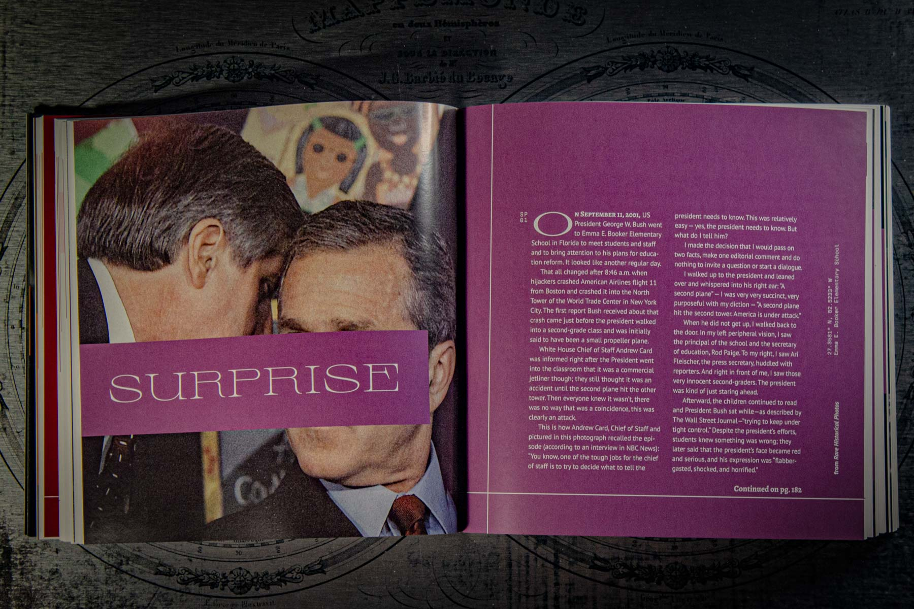
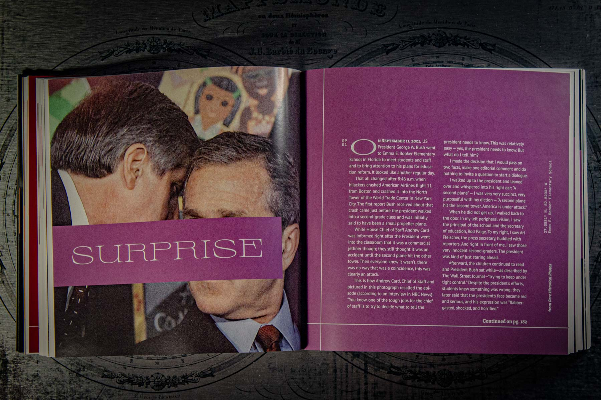
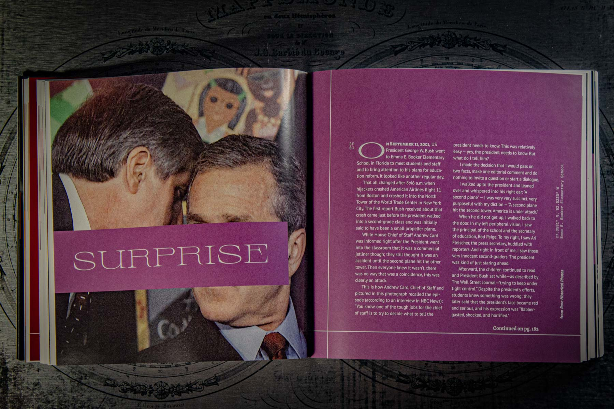
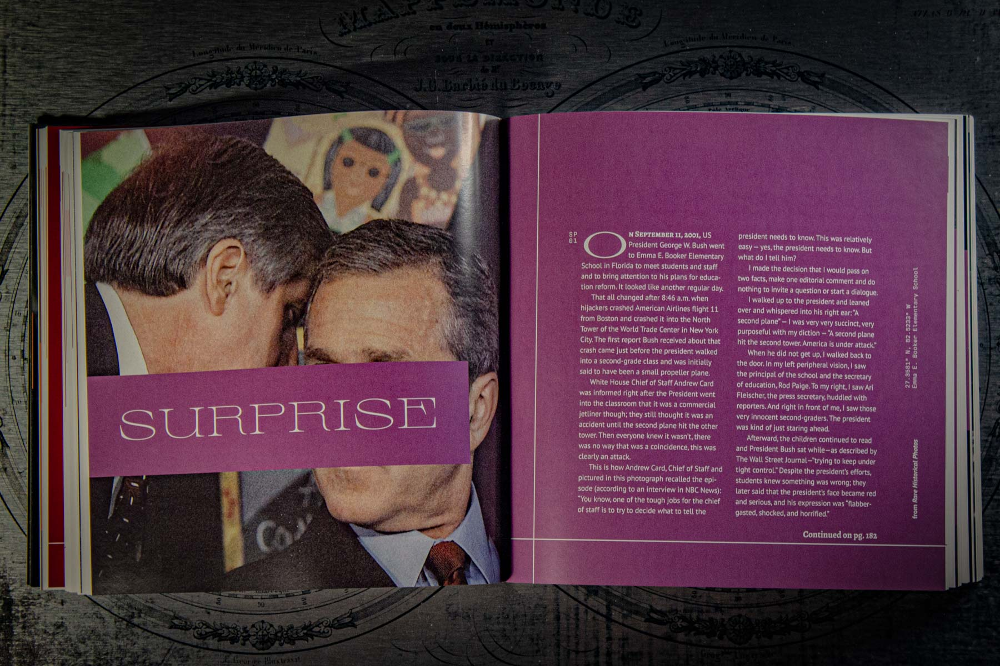

 

A six-chapter compendium of emotional experiences experienced by or relating to men. These experiences were sourced from volunteer form, articles, tweets, personal interviews, and more. All experiences were tied to a physical location, which were then utilized to create maps.
Atlas of Emotions was awarded 2nd Prize at the 2022 Art + Design Expo in Boone, North Carolina.